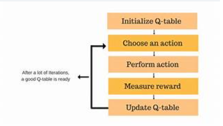

ü§ñ What is Q-Learning?
Q-Learning is a model-free reinforcement learning algorithm used to learn the optimal action-selection policy for an agent in a Markov Decision Process (MDP).
It helps an agent learn how to act optimally in an environment by interacting with it, receiving rewards, and updating its knowledge of action values over time.
üìå Core Idea
Q-Learning uses a table (called the Q-table) to estimate the utility (or "Q-value") of taking a particular action in a given state.
The goal is to learn the optimal Q-values which guide the agent to take the best actions for maximizing cumulative rewards.
üßÆ Q-Learning Formula
Where:
- Q(s, a): Current Q-value of state
s and action a
- α (alpha): Learning rate (how quickly we adopt new knowledge)
- γ (gamma): Discount factor (how much we value future rewards)
- R: Immediate reward from taking action
a in state s
- s′: Next state after taking action
a
- maxa′ Q(s′, a′): Best possible Q-value in the next state
üìà Visualization

Agent interacts with the environment, collects rewards, and updates Q-values to learn optimal policy.
üöÄ Applications of Q-Learning
- Game AI (e.g., Tic-Tac-Toe, Chess, GridWorld)
- Robot navigation and control systems
- Recommendation systems
- Traffic signal control and autonomous vehicles
- Portfolio and stock trading strategies
✅ Advantages
- Does not require a model of the environment (model-free)
- Simple to implement and understand
- Works well in discrete environments with clear state-action definitions
⚠️ Limitations
- Scalability issues for large state-action spaces (needs function approximation like Deep Q-Learning)
- Can converge slowly without proper exploration (e.g., ε-greedy strategy)
- Performance depends on tuning learning rate (α) and discount factor (γ)